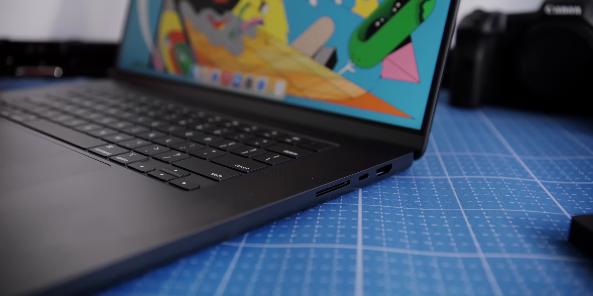
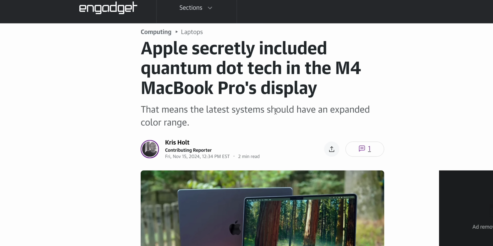

이번 포스트에서는 최신 M4 MacBook Pro에 대한 리뷰를 다루고 있습니다. 다양한 기능 및 디자인 측면에서의 혁신을 살펴보며, 이 제품이 왜 주목받고 있는지 알아보겠습니다. 
나노 텍스처 디스플레이
- 매트 마감재로 반사를 줄여주어 다양한 조명 환경에서 시인성을 확보함
- 알루미늄 바디에서 고급스러운 느낌을 강조함
이제 디스플레이 옵션에 나노 텍스처가 추가되어 반사 없는 시각 경험을 제공합니다.

Thunderbolt 5의 도입
- Thunderbolt 5는 더 높은 대역폭을 제공하여 장치 연결성을 확장함
- 3개의 6K 디스플레이를 지원하여 멀티 작업 환경에서 유용함
Thunderbolt 5가 적용된 새로운 MacBook Pro로 더 빠르고 유연한 장치 연결이 가능합니다.

배터리 수명 향상
- M4의 향상된 효율성 덕분에 배터리 성능이 개선됨
- 같은 용량의 배터리로 더 긴 사용 시간을 제공함
새로운 M4 칩 덕분에 배터리 수명이 더욱 향상되어 사용자에게 실용성을 제공합니다.

화면 밝기 및 퀀텀닷 기술
- 최대 1000 nitr의 밝기를 지원하여 햇볕 아래에서도 가독성이 뛰어남
- 퀀텀닷 기술을 활용하여 색감과 반응 속도 개선
퀀텀닷 디스플레이로 밝기와 색상이 더욱 선명해져 어떠한 작업 환경에서도 최고의 비주얼을 제공합니다.
성능 향상 및 메모리 업그레이드
- 16GB의 통합 메모리로 기본 성능이 향상됨
- M4는 더욱 향상된 속도와 처리 능력을 제공함
최신 M4 모델은 모든 기본 MacBook이 더욱 우수한 성능을 발휘하도록 만들어 주어 유의미한 업그레이드라고 할 수 있습니다.
Tags: #MacBook Pro #M4 칩 #나노 텍스처 징후 #Thunderbolt 5 #퀀텀닷 디스플레이 #배터리 수명 #메모리 업그레이드